ГЛАВНАЯ
ГЕРОИ
Abbadon
Pudge
Drow Ranger
Cristal Maiden
Beastmaster
Lifestealer
Phantom Assasin
Disraptor
Brewmaster
EarthShaker
Terorblade
Ancient Apparition
Magnus
BristleBack
Bloodseeker
Invoker
Timbersaw
EarthSpirit
Bounty Hunter
Silencer
ИСТОРИЯ ИГРЫ
ОБО МНЕ
АНКЕТА
dotawiki
УНИВЕРСАЛЬНЫЙ
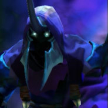
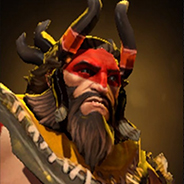
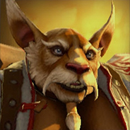
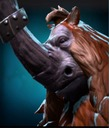
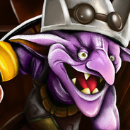
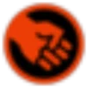
СИЛА
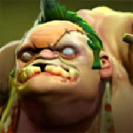
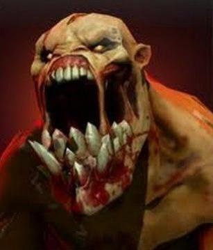
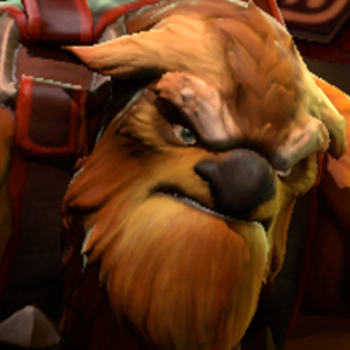
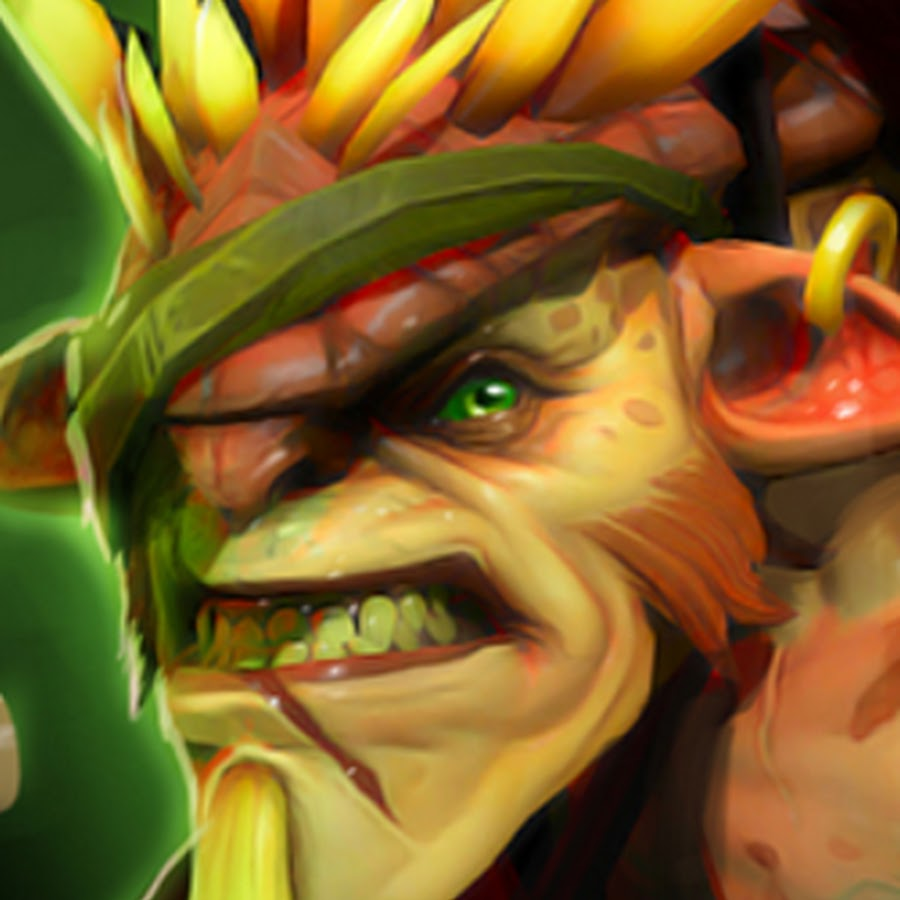
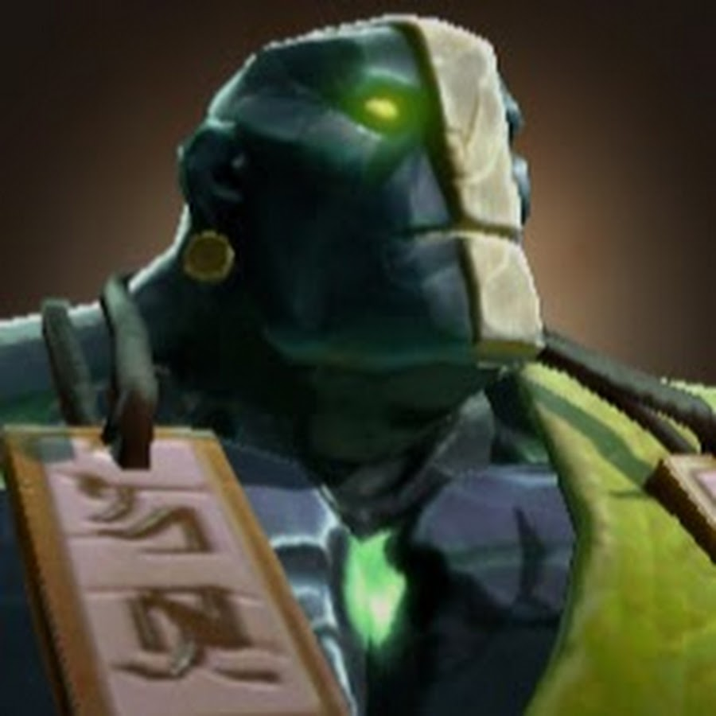
ЛОВКОСТЬ
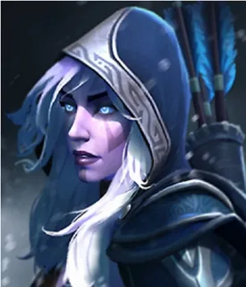
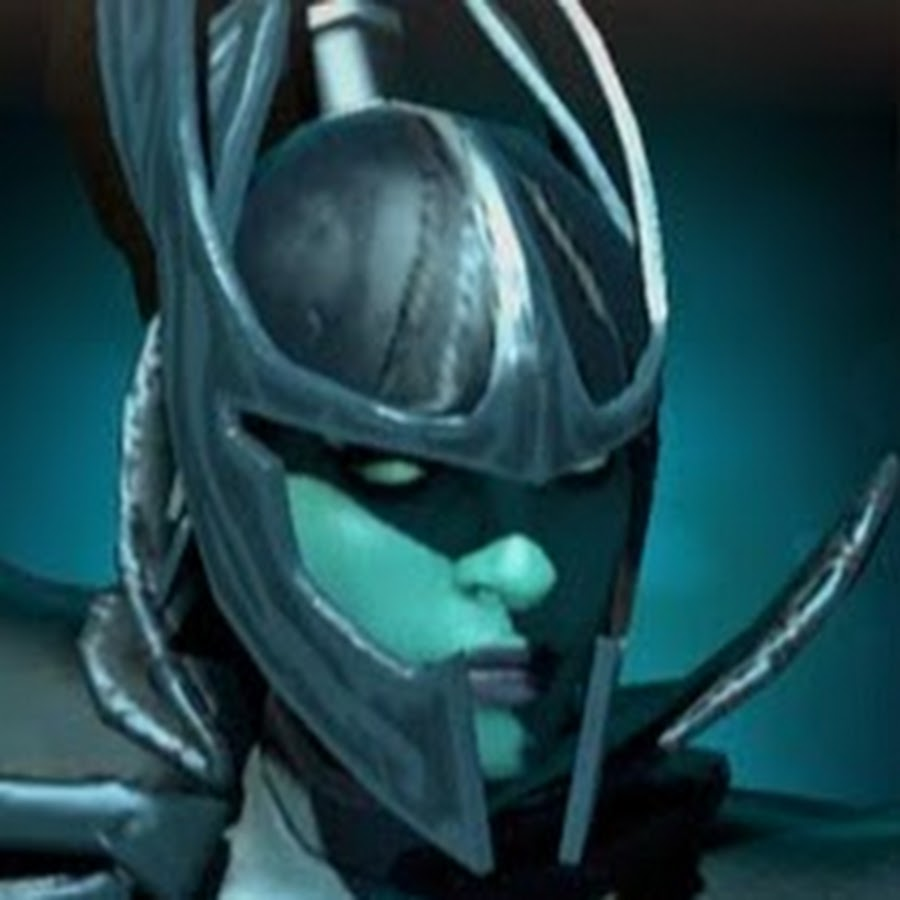
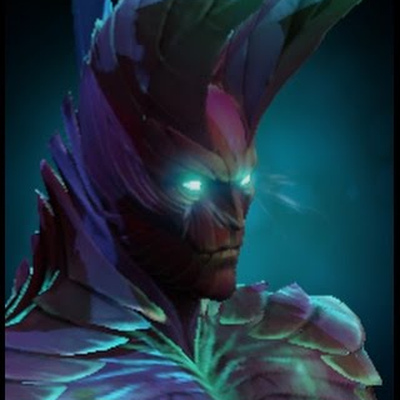
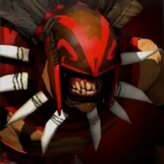
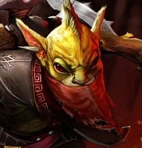
ИНТЕЛЕКТ
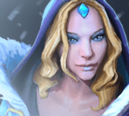
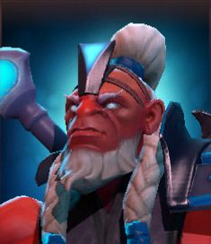
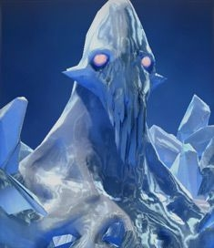
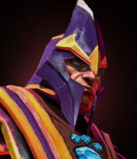


 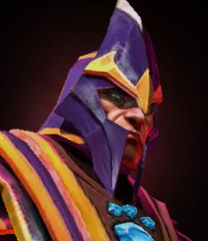
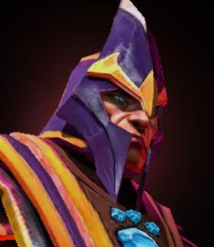